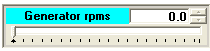
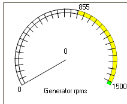

The Generator has the following associated elements in this synoptic.
•The image of the Generator itself.
•Two widgets that present the Generator's rpms at every instant. One linear widget and a circular widget.
|
 |
 |
This circular widget has marked different areas that give a hint of the situation for the Generator.
The yellow areas indicates that the Wind Turbine is a region of controlled rpms while going to Cutin. The main purpose of this controlled areas is to achieve an "soft start": the acceleration of the DriveTrain when the thyristors start conduction is below a given limit. Remember that during the thyristors conduction phase, there is a little motoring time, consuming some active power (little) but a sizeable reactive power. This is the moment for the winding of the Generator to create the magnetic field needed to generate power: i.e. to create the equivalent to a permanent magnet).
The green areas are production areas. They correspond to working limits recommended by the Generator manufacturer. See "Generator's characteristics" to see the values and graphs for the simulated generator in the Simulator.
The red areas correspond to dangerous situations.
These areas, as well as the maximum and minimum values, change dynamically to adapt to each situation. This is because in the asynchronous generators the rpms regimen for motoring (consuming) and generating (delivery) is very narrow: if synchronous speed is 1500 rpms, 1499 implies consuming (motoring), and 1501 implies generation.
Also marked in the watch are the rpms limits for the two security limits (VCU and HCU). VCU is related to a device in the Generator's shaft, HCU is the absolute limit detected in the Blades. They act in order: if rpms surpasses the VCU limit some specific action is taken (braking with the disc). If that fails and the DriveTrain continues increasing its rpms and surpasses the HCU limit a very hard mechanical device in the Hub act to completely stop the Wind Turbine. In these cases, being far away from the Wind Turbine is very much recommended.